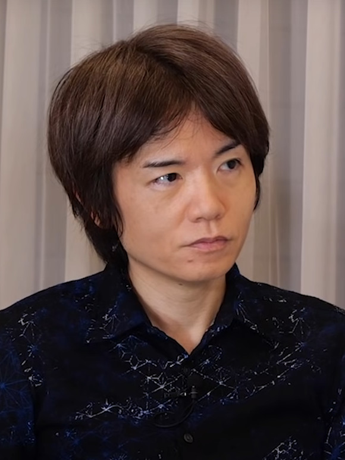

LEGEND
ぼくが尊敬するゲームクリエイター
岡本吉起
元カプコン 執行役員 / ゲームクリエイター
ストリートファイターII
バイオハザード
モンスターストライク
「面白いゲームには4段階の面白さがある」
1接触前
2初見
3プレイ中
4継続プレイ
1
接触前
聞いて面白い
企画・コンセプト
タイトル・コピー
口コミ・評判
触れる前に「気になる」を作る段階。弱いと土俵に立てない。
2
初見
見て面白い
キャラクター
グラフィック
世界観・雰囲気
第一印象で期待値が決まる。最初の数秒が勝負。
3
プレイ中
遊んで面白い
操作性・手触り
ゲームシステム
難易度バランス
体験の中核。ここが弱いと前段の努力も無意味に。
4
継続プレイ
繰返して面白い
レベルデザイン
報酬・達成感
奥深さ・上達感
「またやりたい」を設計する。ゲームが生き続ける。

P 1
桜井政博
星のカービィ
スマブラシリーズ
リスクとリターン
面白さはリスクを取ってリターンを得る構造から生まれる、という視点
P 2
Sid Meier
Civilization
Pirates!
面白い意思決定
ゲームとは「一連の面白い意思決定」であるとして知られる考え方
P 3
Raph Koster
Ultima Online
A Theory of Fun
楽しさは学習
脳が新しいパターンを学習するときに楽しさが生まれる、という整理
P 4
宮本茂
スーパーマリオ
ゼルダの伝説
Wii Sports
触ってわかる体験
説明しなくても触った瞬間に「面白い」と伝わる体験を重視する姿勢